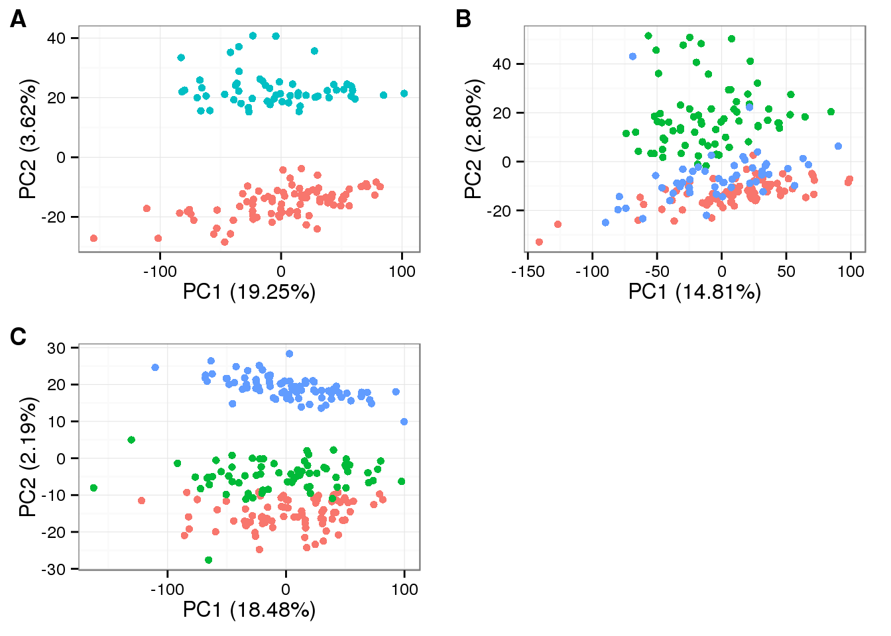
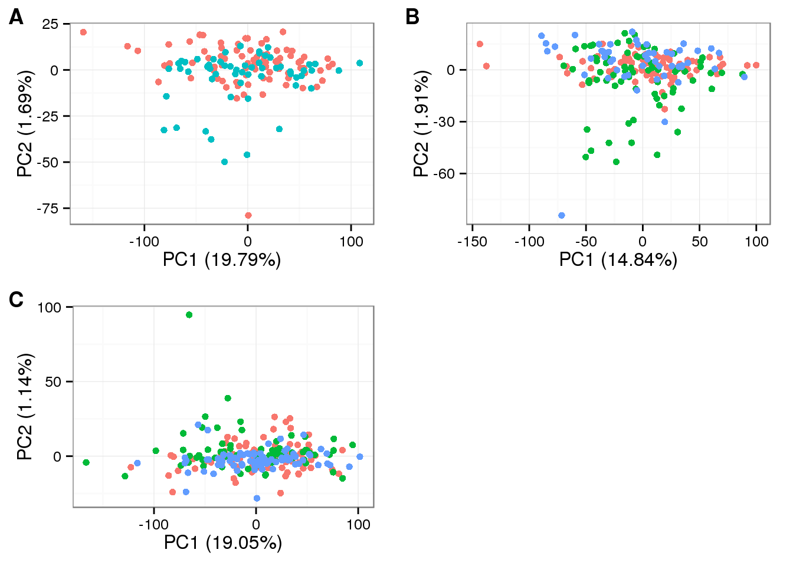

Last updated: 2015-12-17
Code version: 035bc098a6e8b06a27e2dab7c55453c5866ffe7b
One of the ongoing debates in our data normalization project centers around the question: is there true individual difference between these cell lines in terms of global transcriptome profile? If so, then an analysis of the princiapl source of variation should reveal that individual is the the most defining source of variation.
I decided to do a quick check on batches within each indvidual cell line. We have been assessing the results of all cell lines together. To me, it is not immediately obvious whether batches are more similar with individuals or between individuals (despite results of statistical signficance). Hence, I performed principal component analysis for each individual cell lines and visualize the results to observe whether the batches occupy a major source of variation in the pricipal component analysis. If so, then I suspect the normalization step is doing a good job. If not, then I can say affirmatively that the normalization step for the current data step is doing a good job, regardless of whether I believe there to be true individual difference in the data or not….
I performed PCA on the data after ERCC linear transformation and after batch-effect correction.
library("cowplot")Loading required package: ggplot2
Attaching package: 'cowplot'
The following object is masked from 'package:ggplot2':
ggsavetheme_set(theme_bw(base_size = 12))
source("functions.R")anno_filter <- read.table("../data/annotation-filter.txt",
header = TRUE,
stringsAsFactors = FALSE)molecules_cpm_trans <- read.table("../data/molecules-cpm-trans.txt",
header = TRUE,
stringsAsFactors = FALSE)pca_molecules_cpm_trans_1 <- run_pca(molecules_cpm_trans[ , anno_filter$individual == "NA19098"])
pca_molecules_cpm_trans_2 <- run_pca(molecules_cpm_trans[ , anno_filter$individual == "NA19101"])
pca_molecules_cpm_trans_3 <- run_pca(molecules_cpm_trans[ , anno_filter$individual == "NA19239"])
plot_grid(
plot_pca(pca_molecules_cpm_trans_1$PCs, explained = pca_molecules_cpm_trans_1$explained,
metadata = anno_filter[anno_filter$individual == "NA19098", ],
color = "batch") + theme(legend.position = "none"),
plot_pca(pca_molecules_cpm_trans_2$PCs, explained = pca_molecules_cpm_trans_2$explained,
metadata = anno_filter[anno_filter$individual == "NA19101", ],
color = "batch") + theme(legend.position = "none"),
plot_pca(pca_molecules_cpm_trans_3$PCs, explained = pca_molecules_cpm_trans_3$explained,
metadata = anno_filter[anno_filter$individual == "NA19239", ],
color = "batch") + theme(legend.position = "none"),
labels = LETTERS[1:3])
molecules_final <- read.table("../data/molecules-final.txt",
header = TRUE, stringsAsFactors = FALSE)pca_final_1 <- run_pca(molecules_final[ , anno_filter$individual == "NA19098"])
pca_final_2 <- run_pca(molecules_final[ , anno_filter$individual == "NA19101"])
pca_final_3 <- run_pca(molecules_final[ , anno_filter$individual == "NA19239"])
plot_grid(
plot_pca(pca_final_1$PCs, explained = pca_final_1$explained,
metadata = anno_filter[anno_filter$individual == "NA19098", ],
color = "batch") + theme(legend.position = "none"),
plot_pca(pca_final_2$PCs, explained = pca_final_2$explained,
metadata = anno_filter[anno_filter$individual == "NA19101", ],
color = "batch") + theme(legend.position = "none"),
plot_pca(pca_final_3$PCs, explained = pca_final_3$explained,
metadata = anno_filter[anno_filter$individual == "NA19239", ],
color = "batch") + theme(legend.position = "none"),
labels = LETTERS[1:3])
sessionInfo()R version 3.2.0 (2015-04-16)
Platform: x86_64-unknown-linux-gnu (64-bit)
locale:
[1] LC_CTYPE=en_US.UTF-8 LC_NUMERIC=C
[3] LC_TIME=en_US.UTF-8 LC_COLLATE=en_US.UTF-8
[5] LC_MONETARY=en_US.UTF-8 LC_MESSAGES=en_US.UTF-8
[7] LC_PAPER=en_US.UTF-8 LC_NAME=C
[9] LC_ADDRESS=C LC_TELEPHONE=C
[11] LC_MEASUREMENT=en_US.UTF-8 LC_IDENTIFICATION=C
attached base packages:
[1] stats graphics grDevices utils datasets methods base
other attached packages:
[1] testit_0.4 cowplot_0.3.1 ggplot2_1.0.1 knitr_1.10.5
loaded via a namespace (and not attached):
[1] Rcpp_0.12.0 magrittr_1.5 MASS_7.3-40 munsell_0.4.2
[5] colorspace_1.2-6 stringr_1.0.0 httr_0.6.1 plyr_1.8.3
[9] tools_3.2.0 grid_3.2.0 gtable_0.1.2 htmltools_0.2.6
[13] yaml_2.1.13 digest_0.6.8 reshape2_1.4.1 formatR_1.2
[17] bitops_1.0-6 RCurl_1.95-4.6 evaluate_0.7 rmarkdown_0.6.1
[21] labeling_0.3 stringi_0.4-1 scales_0.2.4 proto_0.3-10